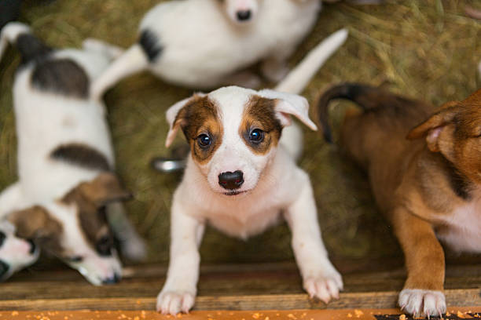

Rescatado
El animal ha sido encontrado y registrado en el sistema.
Consulta y seguimiento de los animales rescatados.
En esta sección se presenta el listado de animales rescatados y el estado actual de sus respectivos casos.
| ID | Nombre o caso | Categoría | Urgencia | Responsable | Estado |
|---|---|---|---|---|---|
| 001 | Max | Perro | Alta | Veterinario | En tratamiento |
| 002 | Luna | Gato | Media | Voluntario | Rescatado |
| 003 | Ave silvestre | Fauna silvestre | Alta | Veterinario | En tratamiento |
| 004 | Rocky (Hamster) | Otro (Especificado en el título del caso) | Baja | Voluntario | Adopción |
El animal ha sido encontrado y registrado en el sistema.
El animal recibe atención y seguimiento por parte del personal veterinario.
El animal se encuentra en proceso de búsqueda de un hogar permanente.
